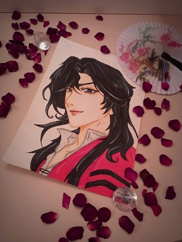

❰❰❰powróć
O Patrycji
No to najpierw może coś o mnie, jestem Pati. Mam wiele zainteresowań ale najbardziej lubię rysować , to moja pasja , zawsze w wolnych chwilach coś rysuje.Często też w wolnych chwilach czytam , uwielbiam kryminały i horrory, chociaż lubię także literaturę Polską. Moimi ulubionymi pisarzami są Edgar Allan Poe, Stephan King i Adam Mickiewicz . Mam naprawdę duża kolekcję książek , prawie za każdym razem gdy jestem w mieście wchodzę do antykwariatu, można tam znaleźć naprawdę super książki! Chętnie też słucham muzyki moje ulubione zespoły to: Malice Mizer, Ghost i wiele innych. Nie umiem się zdecydować na ulubiona piosenkę, każda jest wyjątkowa na swój sposób.